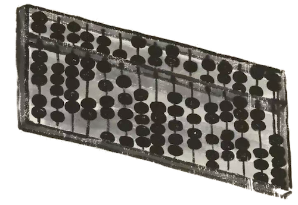
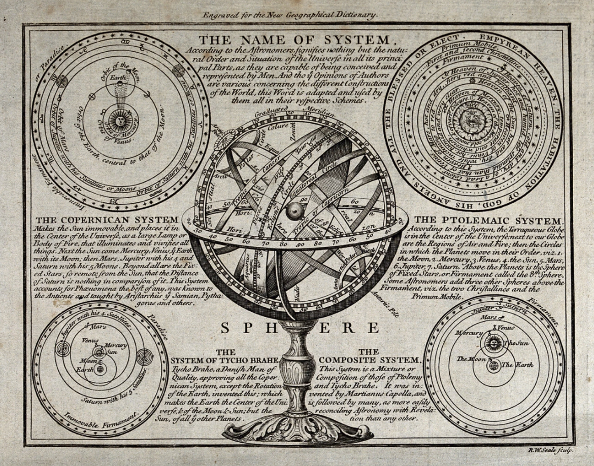

张衡,东汉末年数学家、地理学家、天文学家、发明家。
他最著名的发明是地动仪，被认为是中国最早的地震仪器。


在数学方面，张衡的主要贡献包括对圆周率的研究。
他的研究结果表明圆周率在3.14到3.16之间，这一成果在当时是相当先进的。
张衡还撰写了一部数学著作《算罔论》，虽然这本书已经失传，但他在数学上的贡献仍然被后人所认可。 除了数学，张衡在天文、地理、文学、绘画等方面也有显著成就。他改进了“浑天仪”，这是一种可以模拟天体运行的仪器，并在《灵宪》一书中记录了他的天文观测和研究。
此外，张衡还绘制了一幅“地形图”，这幅图一直流传到唐朝，显示出他对地理学的深刻理解。
张衡的成就不仅在当时具有重要影响，而且对后世也有深远的影响。
例如，国际天文学联合会将月球背面的一个环形山命名为“张衡环形山”，太阳系中的1802号小行星也被命名为“张衡星”，以纪念他的贡献。